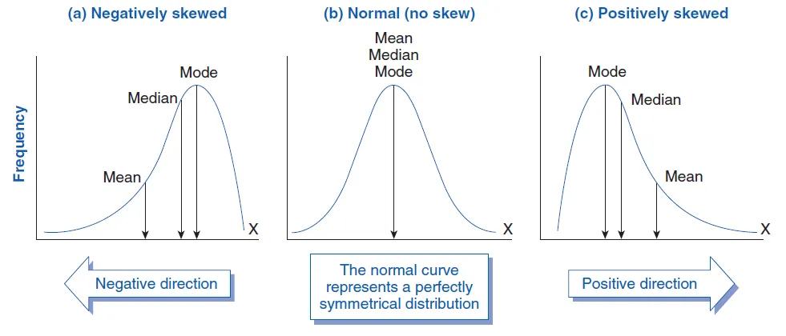
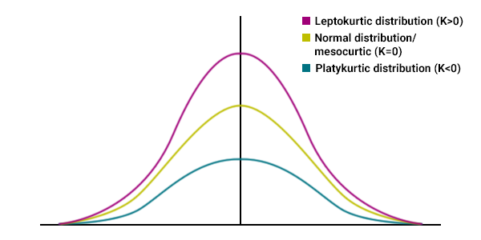

Week 2: Descriptive statistics#
Introduction to descriptive statistics#
Descriptive statistics are numbers that are used to describe and summarize the data.
Measures of central tendency:#
mean
median
mode
Measures of variability or dispersion:#
variance or standard deviation
coefficient of variation
minimum and maximum values
IQR (Interquartile Range)
skewness
kurtosis
Measures of dispersion or variability#
Variance#
Variance measures the dispersion of a set of data points around their mean value.
Variance gives results in the original units squared.
Standard deviation#
Standard deviation is the most common used measure of variability.
It is the square-root of the variance.
Skewness#
Skewness is a measure of a distribution’s symmetry or more precisely lack of symmetry.
It is used to mean the absence of symmetry from the mean of the dataset.
The rule of thumb for skewness values are:#
If the skewness is between -0.5 and 0.5, the data are fairly symmetrical.
If the skewness is between -1 and – 0.5 or between 0.5 and 1, the data are moderately skewed.
If the skewness is less than -1 or greater than 1, the data are highly skewed.

Kurtosis#
Kurtosis is the degree of peakedness of a distribution.
Mesokurtic curve:#
kurtosis exactly 3 (excess kurtosis exactly 0).
Platykurtic curve:#
A distribution with kurtosis < 3 (excess kurtosis < 0) is called platykurtic.
As compared to a normal distribution, its central peak is lower and broader, and its tails are shorter and thinner.
Leptokurtic curve:#
A distribution with kurtosis > 3 (excess kurtosis > 0) is called leptokurtic.
As compared to a normal distribution, its central peak is higher and sharper, and its tails are longer and fatter.

Import python libraries#
import numpy as np
import pandas as pd
import scipy.stats as stats
# Sample data
data = [12, 15, 16, 18, 20, 21, 22, 23, 24, 25]
Given a sample of observations \(y_t, t = 1, \cdots, T\), the mean \(\mu\) is calculated such that:
\(\mu = \frac{\sum_{i=1}^T {y_t}}{T}\).
Mean (Average):
Mean (μ) is calculated as the sum of all data points divided by the number of data points.
# Manual Calculation
Mean = (12 + 15 + 16 + 18 + 20 + 21 + 22 + 23 + 24 + 25) / 10
Mean
19.6
# Calculation using Python
Mean_p = np.mean(data)
Mean_p
19.6
Variance#
Variance measures how data points vary from the mean.
The variance is calculated such that:
\(V(x) = \frac{\sum_{i=1}^T {(y_t - \mu)^2}}{T-1}\).
# Manual Calculation
Variance = ((12 - 19.6)**2 + (15 - 19.6)**2 + (16 - 19.6)**2 + (18 - 19.6)**2 + (20 - 19.6)**2 + (21 - 19.6)**2 + (22 - 19.6)**2 + (23 - 19.6)**2 + (24 - 19.6)**2 + (25 - 19.6)**2) / (10 - 1)
Variance
18.044444444444444
# Python implementation of Variance
variance_p = np.var(data, ddof=1) # ddof=1 for sample variance
variance_p
18.044444444444444
The standard deviation is calculated such that:
\(σ(x)= \sqrt{var}\).
# Manual Calculation
std_dev = np.sqrt(Variance)
std_dev
4.247875285886398
# Standard Deviation
std_dev_p = np.std(data, ddof=1) # ddof=1 for sample standard deviation
std_dev_p
4.247875285886398
If we let
We can calculate the coefficient of skeweness as
# Manual Calculation
Skewness = (pow((12 - 19.6),3) + pow((15 - 19.6),3) + pow((16 - 19.6),3) + pow((18 - 19.6),3) + pow((20 - 19.6),3) + pow((21 - 19.6),3) + pow((22 - 19.6),3) + pow((23 - 19.6),3) + pow(24 - 19.6,3) + pow((25 - 19.6),3)) / (10 * pow(std_dev,3))
Skewness
-0.37635737968447946
# Skewness python implementation
skew = stats.skew(data)
skew
-0.44079501259842147
We can calculate the coefficient of kurtosis as:
using the biaised estimator of the standard deviation \(\sigma\) we can write the expression above as:
# Manual Calculation
Kurtosis = (pow((12 - 19.6),4) + pow((15 - 19.6),4) + pow((16 - 19.6),4) + pow((18 - 19.6),4) + pow((20 - 19.6),4) + pow((21 - 19.6),4) + pow((22 - 19.6),4) + pow((23 - 19.6),4) + pow((24 - 19.6),4) + pow((25 - 19.6),4)) / (10 * pow(std_dev,4))
Kurtosis
1.6444224562595553
# Kurtosis using python
kurtosis = stats.kurtosis(data)
kurtosis
-0.9698488194326482
and the covariance \(Cov(x,y)\) between \(x_i\) and \(y_i\) as:
and the correlation \(\rho\) between \(X_i\) and \(Y_i\) as:
Q2.
In a speech, Why Banks failed the stress test, February 2009, Andrew Haldane of the Bank of England provides the following summary statistics for the “golden era” 1998-2007 and for a long period. Growth is annual percent GDP growth, inflation is annual percent change in the RPI and for both the long period is 1857-2007. FTSE is the monthly percent change in the all share index and the long period is 1693-2007.
Growth |
Inflation |
FTSE |
||||
|---|---|---|---|---|---|---|
98-07 |
long |
98-07 |
long |
98-07 |
long |
|
Mean |
2.9 |
2.0 |
2.8 |
3.1 |
0.2 |
0.2 |
SD |
0.6 |
2.7 |
0.9 |
5.9 |
4.1 |
4.1 |
Skew |
0.2 |
-0.8 |
0.0 |
1.2 |
-0.8 |
2.6 |
Excess Kurtosis |
-0.8 |
2.2 |
-0.3 |
3.0 |
3.8 |
62.3 |
(a) Explain how the mean; standard deviation, SD; coefficient of skewness and coefficient of kurtosis are calculated, and what they measure.
(b) What values for the coefficients of skewness and kurtosis would you expect from a normal distribution. Which of the series shows the least evidence of normality.
( c) Haldane says “these distributions suggest that the Golden Era” distributions have a much smaller variance and slimmer tails” and “many risk management models developed within the private sector during the golden decade were, in effect, pre-programmed to induce disaster myopia.”. Explain what he means using these statistics.
Q3.
Consider the set of observations on a variable \(X_i, i = 1, 2, ... , T\) and
\(w_i = a + b x_i\).
\(\mu = \frac{\sum_{i=1}^T {x_i}}{T}\).
Q4.
Consider the set of observations on variables \(x_i, y_i\), \(i = 1, 2, ... , T\).
Let:
and
(i)
Show that each of the following four expressions are true
(ii)
Show that the variance equals the mean of the squares minus the square of the mean:
2 + data |
|---|
2+12 |
2+15 |
2+16 |
2+18 |
2+20 |
2+21 |
2+22 |
2+23 |
2+24 |
2+25 |
%matplotlib inline
import os
from datetime import datetime
import pandas as pd
import pandas_datareader.data as web
import matplotlib.pyplot as plt
import mplfinance as mpf
import seaborn as sns
FRED#
start = datetime(2010, 1, 1)
end = datetime(2023, 1, 27)
gdp = web.DataReader('GDP', 'fred', start, end)
gdp.describe()
| GDP | |
|---|---|
| count | 53.000000 |
| mean | 19444.975698 |
| std | 3255.623892 |
| min | 14764.610000 |
| 25% | 16728.687000 |
| 50% | 18892.639000 |
| 75% | 21647.640000 |
| max | 26813.601000 |
inflation = web.DataReader(['CPIAUCSL', 'CPILFESL'], 'fred', start, end)
inflation.info()
<class 'pandas.core.frame.DataFrame'>
DatetimeIndex: 157 entries, 2010-01-01 to 2023-01-01
Data columns (total 2 columns):
# Column Non-Null Count Dtype
--- ------ -------------- -----
0 CPIAUCSL 157 non-null float64
1 CPILFESL 157 non-null float64
dtypes: float64(2)
memory usage: 3.7 KB
World Bank#
from pandas_datareader import wb
gdp_variables = wb.search('gdp.*capita.*const')
gdp_variables.head()
| id | name | unit | source | sourceNote | sourceOrganization | topics | |
|---|---|---|---|---|---|---|---|
| 691 | 6.0.GDPpc_constant | GDP per capita, PPP (constant 2011 internation... | LAC Equity Lab | GDP per capita based on purchasing power parit... | b'World Development Indicators (World Bank)' | Economy & Growth | |
| 10978 | NY.GDP.PCAP.KD | GDP per capita (constant 2015 US$) | World Development Indicators | GDP per capita is gross domestic product divid... | b'World Bank national accounts data, and OECD ... | Economy & Growth | |
| 10980 | NY.GDP.PCAP.KN | GDP per capita (constant LCU) | World Development Indicators | GDP per capita is gross domestic product divid... | b'World Bank national accounts data, and OECD ... | Economy & Growth | |
| 10982 | NY.GDP.PCAP.PP.KD | GDP per capita, PPP (constant 2017 internation... | World Development Indicators | GDP per capita based on purchasing power parit... | b'International Comparison Program, World Bank... | Economy & Growth | |
| 10983 | NY.GDP.PCAP.PP.KD.87 | GDP per capita, PPP (constant 1987 internation... | WDI Database Archives | b'' |
wb_data = wb.download(indicator='NY.GDP.PCAP.KD',
country=['US', 'CA', 'MX'],
start=1990,
end=2019)
wb_data.head()
| NY.GDP.PCAP.KD | ||
|---|---|---|
| country | year | |
| Canada | 2019 | 45113.066282 |
| 2018 | 44917.483728 | |
| 2017 | 44325.488337 | |
| 2016 | 43536.913403 | |
| 2015 | 43596.135537 |
OECD#
df = web.DataReader('TUD', 'oecd', start='2010', end='2019')
# df[['Japan', 'United States']]
df
| Country | Australia | Austria | Belgium | Canada | Czech Republic | Denmark | Finland | France | Germany | Greece | ... | United States | OECD - Total | Chile | Colombia | Costa Rica | Estonia | Israel | Latvia | Lithuania | Slovenia |
|---|---|---|---|---|---|---|---|---|---|---|---|---|---|---|---|---|---|---|---|---|---|
| Frequency | Annual | Annual | Annual | Annual | Annual | Annual | Annual | Annual | Annual | Annual | ... | Annual | Annual | Annual | Annual | Annual | Annual | Annual | Annual | Annual | Annual |
| Measure | Percentage of employees | Percentage of employees | Percentage of employees | Percentage of employees | Percentage of employees | Percentage of employees | Percentage of employees | Percentage of employees | Percentage of employees | Percentage of employees | ... | Percentage of employees | Percentage of employees | Percentage of employees | Percentage of employees | Percentage of employees | Percentage of employees | Percentage of employees | Percentage of employees | Percentage of employees | Percentage of employees |
| Time | |||||||||||||||||||||
| 2010-01-01 | 18.400000 | 28.900000 | 53.000000 | 27.200001 | 16.1 | 68.099998 | 71.400002 | 10.8 | 18.900000 | 22.200001 | ... | 11.4 | 17.799999 | 13.9 | 9.2 | 12.900000 | 8.2 | NaN | 15.1 | 10.1 | 32.599998 |
| 2011-01-01 | 18.400000 | 28.299999 | 54.200001 | 26.900000 | 15.4 | 68.699997 | 69.599998 | NaN | 18.400000 | NaN | ... | 11.3 | 17.700001 | 13.8 | 9.1 | 13.400000 | 7.0 | NaN | 13.7 | 9.7 | 36.700001 |
| 2012-01-01 | 18.200001 | 28.000000 | 54.099998 | 27.200001 | 14.8 | 69.000000 | 69.199997 | NaN | 18.299999 | NaN | ... | 10.8 | 17.299999 | 14.4 | 9.1 | 13.100000 | 6.0 | 22.799999 | 13.2 | 9.0 | 26.799999 |
| 2013-01-01 | 17.000000 | 27.799999 | 53.299999 | 27.100000 | 13.6 | 68.800003 | 67.500000 | 11.0 | 18.000000 | 23.100000 | ... | 10.8 | 17.100000 | 14.1 | 9.7 | 13.700000 | 5.6 | NaN | 12.9 | 8.4 | 26.200001 |
| 2014-01-01 | 15.100000 | 27.700001 | 52.900002 | 26.400000 | 12.9 | 68.500000 | 67.800003 | NaN | 17.700001 | NaN | ... | 10.7 | 16.799999 | 14.6 | 9.6 | 12.400000 | 5.3 | NaN | 12.8 | 8.1 | 29.400000 |
| 2015-01-01 | 14.600000 | 26.900000 | 51.599998 | 26.299999 | 11.9 | 67.400002 | 65.699997 | 10.8 | 17.000000 | 19.000000 | ... | 10.3 | 16.200001 | 16.9 | 9.5 | 19.299999 | 5.0 | NaN | 12.4 | 7.7 | NaN |
| 2016-01-01 | 13.700000 | 26.299999 | 50.000000 | 25.900000 | 11.4 | 67.500000 | 60.000000 | NaN | 16.600000 | NaN | ... | 10.1 | 15.900000 | 16.6 | NaN | 19.400000 | 5.9 | NaN | 11.6 | 7.1 | NaN |
| 2017-01-01 | NaN | 27.400000 | 52.299999 | 26.500000 | 11.9 | 68.199997 | 67.500000 | NaN | 17.600000 | NaN | ... | 10.6 | 16.500000 | 15.3 | 9.4 | 18.600000 | 4.5 | NaN | 12.7 | 7.9 | 23.799999 |
| 2018-01-01 | NaN | 26.700001 | 50.700001 | 26.299999 | 11.7 | 66.699997 | 62.900002 | NaN | 16.700001 | NaN | ... | 10.3 | 16.000000 | 17.0 | 9.5 | 19.299999 | 4.7 | 25.000000 | 12.3 | 7.7 | NaN |
| 2019-01-01 | NaN | 26.299999 | 49.099998 | 26.100000 | NaN | 67.000000 | 58.799999 | NaN | 16.299999 | NaN | ... | 9.9 | 15.800000 | NaN | NaN | 20.500000 | 6.0 | NaN | NaN | 7.4 | NaN |
10 rows × 39 columns